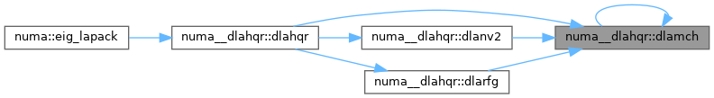
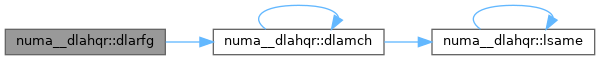

Loading...
Searching...
No Matches
numa__dlahqr Module Reference
Functions/Subroutines | |
| subroutine | dlahqr (wantt, wantz, n, ilo, ihi, h, ldh, wr, wi, iloz, ihiz, z, ldz, info) |
| DLAHQR computes the eigenvalues and Schur factorization of an upper Hessenberg matrix, using the double-shift/single-shift QR algorithm. | |
| subroutine | dlanv2 (a, b, c, d, rt1r, rt1i, rt2r, rt2i, cs, sn) |
| DLANV2 computes the Schur factorization of a real 2-by-2 nonsymmetric matrix in standard form. | |
| subroutine | dlarfg (n, alpha, x, incx, tau) |
| DLARFG generates an elementary reflector (Householder matrix). | |
| logical function | lsame (ca, cb) |
| LSAME | |
| double precision function | dlamch (cmach) |
| DLAMCH | |
Function/Subroutine Documentation
◆ dlahqr()
| subroutine numa__dlahqr::dlahqr | ( | logical | wantt, |
| logical | wantz, | ||
| integer | n, | ||
| integer | ilo, | ||
| integer | ihi, | ||
| double precision, dimension( ldh, * ) | h, | ||
| integer | ldh, | ||
| double precision, dimension( * ) | wr, | ||
| double precision, dimension( * ) | wi, | ||
| integer | iloz, | ||
| integer | ihiz, | ||
| double precision, dimension( ldz, * ) | z, | ||
| integer | ldz, | ||
| integer | info ) |
DLAHQR computes the eigenvalues and Schur factorization of an upper Hessenberg matrix, using the double-shift/single-shift QR algorithm.
Download DLAHQR + dependencies [TGZ] [ZIP] [TXT]
- Purpose:
!> !> DLAHQR is an auxiliary routine called by DHSEQR to update the !> eigenvalues and Schur decomposition already computed by DHSEQR, by !> dealing with the Hessenberg submatrix in rows and columns ILO to !> IHI. !>
- Parameters
-
[in] WANTT !> WANTT is LOGICAL !> = .TRUE. : the full Schur form T is required; !> = .FALSE.: only eigenvalues are required. !>
[in] WANTZ !> WANTZ is LOGICAL !> = .TRUE. : the matrix of Schur vectors Z is required; !> = .FALSE.: Schur vectors are not required. !>
[in] N !> N is INTEGER !> The order of the matrix H. N >= 0. !>
[in] ILO !> ILO is INTEGER !>
[in] IHI !> IHI is INTEGER !> It is assumed that H is already upper quasi-triangular in !> rows and columns IHI+1:N, and that H(ILO,ILO-1) = 0 (unless !> ILO = 1). DLAHQR works primarily with the Hessenberg !> submatrix in rows and columns ILO to IHI, but applies !> transformations to all of H if WANTT is .TRUE.. !> 1 <= ILO <= max(1,IHI); IHI <= N. !>
[in,out] H !> H is DOUBLE PRECISION array, dimension (LDH,N) !> On entry, the upper Hessenberg matrix H. !> On exit, if INFO is zero and if WANTT is .TRUE., H is upper !> quasi-triangular in rows and columns ILO:IHI, with any !> 2-by-2 diagonal blocks in standard form. If INFO is zero !> and WANTT is .FALSE., the contents of H are unspecified on !> exit. The output state of H if INFO is nonzero is given !> below under the description of INFO. !>
[in] LDH !> LDH is INTEGER !> The leading dimension of the array H. LDH >= max(1,N). !>
[out] WR !> WR is DOUBLE PRECISION array, dimension (N) !>
[out] WI !> WI is DOUBLE PRECISION array, dimension (N) !> The real and imaginary parts, respectively, of the computed !> eigenvalues ILO to IHI are stored in the corresponding !> elements of WR and WI. If two eigenvalues are computed as a !> complex conjugate pair, they are stored in consecutive !> elements of WR and WI, say the i-th and (i+1)th, with !> WI(i) > 0 and WI(i+1) < 0. If WANTT is .TRUE., the !> eigenvalues are stored in the same order as on the diagonal !> of the Schur form returned in H, with WR(i) = H(i,i), and, if !> H(i:i+1,i:i+1) is a 2-by-2 diagonal block, !> WI(i) = sqrt(H(i+1,i)*H(i,i+1)) and WI(i+1) = -WI(i). !>
[in] ILOZ !> ILOZ is INTEGER !>
[in] IHIZ !> IHIZ is INTEGER !> Specify the rows of Z to which transformations must be !> applied if WANTZ is .TRUE.. !> 1 <= ILOZ <= ILO; IHI <= IHIZ <= N. !>
[in,out] Z !> Z is DOUBLE PRECISION array, dimension (LDZ,N) !> If WANTZ is .TRUE., on entry Z must contain the current !> matrix Z of transformations accumulated by DHSEQR, and on !> exit Z has been updated; transformations are applied only to !> the submatrix Z(ILOZ:IHIZ,ILO:IHI). !> If WANTZ is .FALSE., Z is not referenced. !>
[in] LDZ !> LDZ is INTEGER !> The leading dimension of the array Z. LDZ >= max(1,N). !>
[out] INFO !> INFO is INTEGER !> = 0: successful exit !> > 0: If INFO = i, DLAHQR failed to compute all the !> eigenvalues ILO to IHI in a total of 30 iterations !> per eigenvalue; elements i+1:ihi of WR and WI !> contain those eigenvalues which have been !> successfully computed. !> !> If INFO > 0 and WANTT is .FALSE., then on exit, !> the remaining unconverged eigenvalues are the !> eigenvalues of the upper Hessenberg matrix rows !> and columns ILO through INFO of the final, output !> value of H. !> !> If INFO > 0 and WANTT is .TRUE., then on exit !> (*) (initial value of H)*U = U*(final value of H) !> where U is an orthogonal matrix. The final !> value of H is upper Hessenberg and triangular in !> rows and columns INFO+1 through IHI. !> !> If INFO > 0 and WANTZ is .TRUE., then on exit !> (final value of Z) = (initial value of Z)*U !> where U is the orthogonal matrix in (*) !> (regardless of the value of WANTT.) !>
- Further Details:
!> !> 02-96 Based on modifications by !> David Day, Sandia National Laboratory, USA !> !> 12-04 Further modifications by !> Ralph Byers, University of Kansas, USA !> This is a modified version of DLAHQR from LAPACK version 3.0. !> It is (1) more robust against overflow and underflow and !> (2) adopts the more conservative Ahues & Tisseur stopping !> criterion (LAWN 122, 1997). !>
Here is the call graph for this function:

Here is the caller graph for this function:

◆ dlamch()
| double precision function numa__dlahqr::dlamch | ( | character | cmach | ) |
DLAMCH
- Purpose:
!> !> DLAMCH determines double precision machine parameters. !>
- Parameters
-
[in] CMACH !> CMACH is CHARACTER*1 !> Specifies the value to be returned by DLAMCH: !> = 'E' or 'e', DLAMCH := eps !> = 'S' or 's , DLAMCH := sfmin !> = 'B' or 'b', DLAMCH := base !> = 'P' or 'p', DLAMCH := eps*base !> = 'N' or 'n', DLAMCH := t !> = 'R' or 'r', DLAMCH := rnd !> = 'M' or 'm', DLAMCH := emin !> = 'U' or 'u', DLAMCH := rmin !> = 'L' or 'l', DLAMCH := emax !> = 'O' or 'o', DLAMCH := rmax !> where !> eps = relative machine precision !> sfmin = safe minimum, such that 1/sfmin does not overflow !> base = base of the machine !> prec = eps*base !> t = number of (base) digits in the mantissa !> rnd = 1.0 when rounding occurs in addition, 0.0 otherwise !> emin = minimum exponent before (gradual) underflow !> rmin = underflow threshold - base**(emin-1) !> emax = largest exponent before overflow !> rmax = overflow threshold - (base**emax)*(1-eps) !>
- Date
- December 2016
Here is the call graph for this function:

Here is the caller graph for this function:

◆ dlanv2()
| subroutine numa__dlahqr::dlanv2 | ( | double precision | a, |
| double precision | b, | ||
| double precision | c, | ||
| double precision | d, | ||
| double precision | rt1r, | ||
| double precision | rt1i, | ||
| double precision | rt2r, | ||
| double precision | rt2i, | ||
| double precision | cs, | ||
| double precision | sn ) |
DLANV2 computes the Schur factorization of a real 2-by-2 nonsymmetric matrix in standard form.
Download DLANV2 + dependencies [TGZ] [ZIP] [TXT]
- Purpose:
!> !> DLANV2 computes the Schur factorization of a real 2-by-2 nonsymmetric !> matrix in standard form: !> !> [ A B ] = [ CS -SN ] [ AA BB ] [ CS SN ] !> [ C D ] [ SN CS ] [ CC DD ] [-SN CS ] !> !> where either !> 1) CC = 0 so that AA and DD are real eigenvalues of the matrix, or !> 2) AA = DD and BB*CC < 0, so that AA + or - sqrt(BB*CC) are complex !> conjugate eigenvalues. !>
- Parameters
-
[in,out] A !> A is DOUBLE PRECISION !>
[in,out] B !> B is DOUBLE PRECISION !>
[in,out] C !> C is DOUBLE PRECISION !>
[in,out] D !> D is DOUBLE PRECISION !> On entry, the elements of the input matrix. !> On exit, they are overwritten by the elements of the !> standardised Schur form. !>
[out] RT1R !> RT1R is DOUBLE PRECISION !>
[out] RT1I !> RT1I is DOUBLE PRECISION !>
[out] RT2R !> RT2R is DOUBLE PRECISION !>
[out] RT2I !> RT2I is DOUBLE PRECISION !> The real and imaginary parts of the eigenvalues. If the !> eigenvalues are a complex conjugate pair, RT1I > 0. !>
[out] CS !> CS is DOUBLE PRECISION !>
[out] SN !> SN is DOUBLE PRECISION !> Parameters of the rotation matrix. !>
- Further Details:
!> !> Modified by V. Sima, Research Institute for Informatics, Bucharest, !> Romania, to reduce the risk of cancellation errors, !> when computing real eigenvalues, and to ensure, if possible, that !> abs(RT1R) >= abs(RT2R). !>
Here is the call graph for this function:

Here is the caller graph for this function:

◆ dlarfg()
| subroutine numa__dlahqr::dlarfg | ( | integer | n, |
| double precision | alpha, | ||
| double precision, dimension( * ) | x, | ||
| integer | incx, | ||
| double precision | tau ) |
DLARFG generates an elementary reflector (Householder matrix).
Download DLARFG + dependencies [TGZ] [ZIP] [TXT]
- Purpose:
!> !> DLARFG generates a real elementary reflector H of order n, such !> that !> !> H * ( alpha ) = ( beta ), H**T * H = I. !> ( x ) ( 0 ) !> !> where alpha and beta are scalars, and x is an (n-1)-element real !> vector. H is represented in the form !> !> H = I - tau * ( 1 ) * ( 1 v**T ) , !> ( v ) !> !> where tau is a real scalar and v is a real (n-1)-element !> vector. !> !> If the elements of x are all zero, then tau = 0 and H is taken to be !> the unit matrix. !> !> Otherwise 1 <= tau <= 2. !>
- Parameters
-
[in] N !> N is INTEGER !> The order of the elementary reflector. !>
[in,out] ALPHA !> ALPHA is DOUBLE PRECISION !> On entry, the value alpha. !> On exit, it is overwritten with the value beta. !>
[in,out] X !> X is DOUBLE PRECISION array, dimension !> (1+(N-2)*abs(INCX)) !> On entry, the vector x. !> On exit, it is overwritten with the vector v. !>
[in] INCX !> INCX is INTEGER !> The increment between elements of X. INCX > 0. !>
[out] TAU !> TAU is DOUBLE PRECISION !> The value tau. !>
Here is the call graph for this function:

Here is the caller graph for this function:

◆ lsame()
| logical function numa__dlahqr::lsame | ( | character | ca, |
| character | cb ) |
LSAME
- Purpose:
!> !> LSAME returns .TRUE. if CA is the same letter as CB regardless of !> case. !>
- Parameters
-
[in] CA !> CA is CHARACTER*1 !>
[in] CB !> CB is CHARACTER*1 !> CA and CB specify the single characters to be compared. !>
Here is the call graph for this function:

Here is the caller graph for this function: